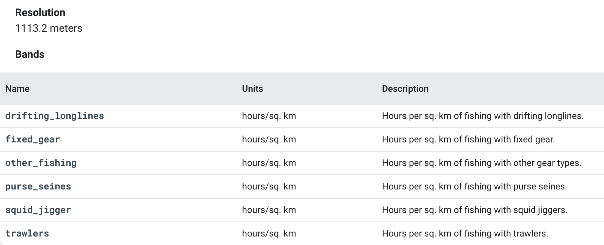
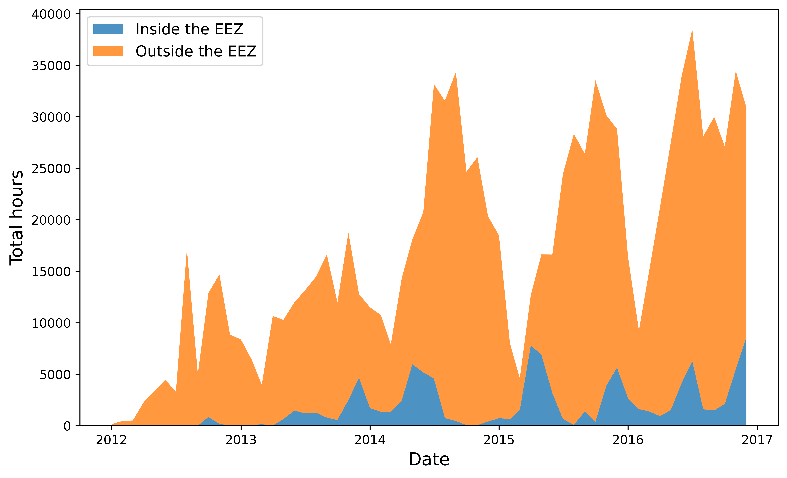

# Import packages
import ee
import geemap as geemap
import pandas as pd
import matplotlib.pyplot as plt
import json
from itertools import chainExtracting GFW’s Fishing Effort Data using Earth Engine Python API
In this post we will dive into the world of Google Earth Engine (GEE) datasets and how to access them using the Python API. Our focus will be on a dataset from Global Fishing Watch (GFW) which provides daily fishing effort as inferred fishing hours. We will take you through the steps of how to read in the dataset, visualize the data, and extract useful information for quantification purposes.
To make things more interesting, we will take a look at a specific case study which explores the differences in fishing effort within and outside of Peru’s Exclusive Economic Zone (EEZ). This study will help us understand the importance of maritime boundaries and how they impact fishing activities.
So, get ready to embark on an exciting journey where you will learn about GEE datasets, Python API, and how to explore fascinating insights using GFW data.
Earth Engine Python API
Google Earth Engine is a platform that combines a vast catalog of satellite imagery and geospatial datasets with powerful analysis capabilities to detect changes and map trends on Earth’s surface. For those not familiar with javascript— the GEE programming language— the Earth Engine Python API provides an easy way to harness the power of Google’s cloud for your own geospatial analysis.
If you’re new to GEE, follow the instructions on this link to set up an account, install the ee package, and authenticate your account.
GFW datasets
The Global Fishing Watch (GFW) provides an open platform to access Automatic Identification System (AIS) data from commercial fishing activities. The AIS is a tracking system that uses transceivers on ships to broadcast vessel information such as unique identification, position, course, and speed. AIS is integrated into all classes of vessels as a collision avoidance tool. However, the GFW collects and processes raw AIS data to characterize vessels and fishing activities.
GFW API offers estimates of fishing effort based on AIS data. Through machine learning models, GFW can identify fishing vessels and predict when they are fishing. First, the model estimates the vessel’s fishing time and location based on its movement patterns by assigning a score to each AIS position distinguishing fishing from non-fishing positions. Then, the apparent fishing effort is calculated by summarizing the fishing hours for all fishing vessels in an area. Finally, the resulting maps of fishing effort are created by rasterizing all AIS positions into a grid and calculating the total fishing activity in each grid cell. More information about the model can be found on the following GitHub repository (link).
Pre-processed AIS data can be accessed from their R package “gfwr”, Google Big Query or downloaded from their website as .cvs files. For this post, we will use one of the two existing products available in GEE derived from the first global assessment of commercial fishing activity, published in Science in 2018.
In the daily fishing hours image collection that we will be using, each image contains daily rasters of fishing effort measured in hours of inferred fishing activity per sq km. Data is available for a given flag state and day, over a 5 years period (2012-2017), where each band represent a fishing gear type. The following table summarizes the image resolution and the available bands.
Dataset Access
To start working with the GFW dataset, we must first load the necessary packages. One of the necessary packages is ee, which is used for making requests to Earth Engine. Another specific package we’ll use isgeemap, which provides an interactive mapping interface to visualize Google Earth Engine resources.
After loading the required packages, the next step is to authenticate and initialize Google Earth Engine to access the data. This involves providing authentication credentials to Earth Engine using a Google account, and then initializing the connection. Once authenticated, we can start accessing the vast array of geospatial datasets and analytical tools available.
# Authenticate google earth engine
ee.Authenticate()
# Initialize google earth engine
ee.Initialize()Now, to access the specific data that we’re interested in, we can simply use the Earth Engine Snippet provided on the dataset page.
# Read in the data on fishing hours from google earth engine
dataset = ee.ImageCollection('GFW/GFF/V1/fishing_hours')Metadata Display
There are a few ways we can examine the metadata and bands of our dataset. Here, we will create an image object from the collection and then index its properties to read more about it.
# Extracting first image of the image collection
fishing_image = dataset.first()
# See image properties
fishing_props = geemap.image_props(fishing_image).getInfo()
print(fishing_props){'IMAGE_DATE': '2012-01-01', 'NOMINAL_SCALE': 1113.1949079327358, 'country': 'ARG', 'system:asset_size': '7.31E-4 MB', 'system:band_names': ['drifting_longlines', 'fixed_gear', 'other_fishing', 'purse_seines', 'squid_jigger', 'trawlers'], 'system:id': 'GFW/GFF/V1/fishing_hours/ARG-20120101', 'system:index': 'ARG-20120101', 'system:time_end': '2012-01-02 00:00:00', 'system:time_start': '2012-01-01 00:00:00', 'system:version': 1518594814620050.0}By examining the results—scrolling to the right—, we can see how the first image corresponds to cell information for the Argentinian fleet. We can gather a lot of useful insights from the metadata, such as the image’s resolution, data size in megabytes, and bands which correspond to different types of fishing gear. Additionally, we can see that the data corresponds to fishing activities that occurred between January 1st and January 2nd, 2012. This gives us a good sense of the information contained within each data asset, allowing us to begin exploring the dataset for our study case.
Peruvian Fisheries Use Case Example
Our case study focuses on using Global Fishing Watch (GFW) data on fishing hours to explore fishing activities inside and outside of Peru’s economic exclusive zone (EEZ). The Peruvian fisheries serve as a valuable example of how international law, including the 1982 United Nations Convention on the Law of the Sea, enables developing countries to retain control over their marine resources and maintain food sovereignty. This is especially critical as foreign fleets from across the globe often take advantage of the rich fishing resources and the high productivity of Peruvian waters, which extend beyond the boundaries of the EEZ. By studying the data on fishing hours, we can gain a better understanding of the overall health and sustainability of the Peruvian fisheries. This information can provide valuable insights into the importance of the EEZ for Peru and how it helps to protect the country’s marine resources from being plundered by foreign fleets.
Visualizing Peruvian fisheries
Visualizing the geographical distribution of fishing effort along the coast allows us to see how EEZs condition the way in which fishing fleets operate, especially in countries like Peru where the fishing industry plays a significant role in the economy. To achieve this, we can create a map to visually compare the total fishing hours within and outside of Peru’s EEZ, regardless of the flag or gear type used.
To create a comparison map, our initial step will be to define our Area of Interest (AOI) corresponding with the Exclusive Economic Zone (EEZ) of Peru. A geojson file containing the boundaries of the EEZ is available in the Github repository on which this post is based. The file is conveniently stored at data/eez_peru/geojson/eez_peru.geojson. The following code reads the file and converts it into an object that can be interpreted by GEE.
# Read in EEZ geometry of Peru
with open('data/eez_peru/geojson/eez_peru.geojson') as f:
geojson = json.load(f)
coords = geojson["features"][0]["geometry"]["coordinates"]
## The resulting List from the geojson file has an extra bracket that we have to remove to be read it as a polygon
aoi_1 = ee.Geometry.Polygon([i for i in chain.from_iterable(coords)])Our next step is to extract the relevant data. In this case, we will choose all fishing data for the entire time series, without regard for the vessel’s flag. We will also aggregate all fishing gear since we want to display the total fishing effort. First, we will apply this to all global data and subsequently clip it to our AOI. By doing so, we are creating two objects that will allow us to compare the effort data from within the EEZ with the data outside its boundaries.
# Global fishing effort:
## Filter by "WLD" to get all global fishing vessel hours. This includes all countries in the dataset.
fishing_effort_ImgCollection = dataset.filterMetadata('country', 'equals', 'WLD')
## Aggregate Image Collection to a single image of global fishing effort
effort_all = fishing_effort_ImgCollection.sum()
## Sum bands to get total effort across gear types
effort_all = effort_all.reduce(ee.Reducer.sum())
## Mask out pixels with no effort
effort_all = effort_all.mask(effort_all.gt(0))
# Fishing effort in Peru's EEZ:
effort_EEZ = fishing_effort_ImgCollection.filterBounds(aoi_1).map(lambda image: image.clip(aoi_1))
## Aggregate Image Collection to a single image of EEZ effort
effort_EZZ = effort_EEZ.sum()
## Sum bands to get total effort across gear types
effort_EZZ = effort_EZZ.reduce(ee.Reducer.sum())
## Mask out pixels with no effort
effort_EZZ = effort_EZZ.mask(effort_EZZ.gt(0))
# Visualization parameters
VisPar = {
'palette': ['0C276C', '3B9088', 'EEFF00', 'ffffff']
}
# Comparing the two maps
left_layer = geemap.ee_tile_layer(effort_EZZ, VisPar, name = "All 2016", opacity = 0.9)
right_layer = geemap.ee_tile_layer(effort_all, VisPar, name = "Effort EZZ", opacity = 0.9)
map_comparison = geemap.Map(center = [-15, -83],zoom = 5)
map_comparison.centerObject(aoi_1, 5)
map_comparison.setOptions("HYBRID")
map_comparison.addLayer(aoi_1, {"color": "white", "width": 1.5}, "EEZ of Perú");
map_comparison.split_map(left_layer, right_layer)
map_comparisonBy adjusting the split bar in the visualization map, we can observe that fishing activity is heavily concentrated just outside the EEZ—loading the data into the map may take a few minutes. This visual is striking and enables us to comprehend the importance of Exclusive Economic Zones, particularly in the context of Peru. What do you think would happen if states sovereignity could not extend beyond the nation’s territorial sea? Without jurisdiction over resources on the EEZ, it is likely that international fishing activity, now concentrating outside the EEZs, would increase on the inside. Without international regulations, this would result in a reduction of fish stocks within a country’s waters, which could adversely affect the country’s economy, particularly if fishing is a significant industry.
Quantifying fishing hours inside and outside the EEZ
In order to further analyze the observed fishing differences between the Exclusive Economic Zone (EEZ) and the region immediately next to it, we will extract temporal series of total fishing hours inside and outside the EEZ. This will provide us with a quantifiable measure to compare the fishing efforts in these two areas. Additionally, the temporal series may enable us to identify any patterns or trends in fishing effort.
Since the GEE dataset exceeds the allowed extraction size, we have created a function that calls for the data of interest in order to work with it in pandas. The following function allow us to agregate all daily fishing hours values per month. With it we get first a dataset with monthly data instead of daily. Once we have temporarilly aggregated the data, we apply a reducer to sum up all fishing gears in one band and get a unique value representing the total fishing hours.
# Create list years and months for use in the function
years = range(2012, 2017)
months = range(1, 13)
# Function to extract data of interest:
## .sum() Aggregates collections to single monthly image of global fishing effort
## .reduce(ee.Reducer.sum()) Sum bands to get total effort across all gear types
def monthly_Sum (collection, years, months):
effort_sum = []
for year in years:
for month in months:
Monthly_sum = collection.filter(ee.Filter.calendarRange(year, year, 'year')) \
.filter(ee.Filter.calendarRange(month, month, 'month')) \
.sum() \
.reduce(ee.Reducer.sum()) \
.set('year', year).set('system:time_start', ee.Date.fromYMD(year, 1, 1))\
.set('month', month).set('system:time_start', ee.Date.fromYMD(year, month, 1).millis())
effort_sum.append (Monthly_sum)
return ee.ImageCollection.fromImages(effort_sum)Once the function is defined, we can apply it to the previously defined Image Collection, fishing_effort_ImgCollection.
byMonth = monthly_Sum(fishing_effort_ImgCollection,years,months)
type(byMonth)ee.imagecollection.ImageCollectionOur updated Image Collection now comprises monthly fishing data for all gears combined. Nevertheless, the size of the included data still surpasses the extraction limit permitted by Google Earth Engine (GEE). Therefore, we will need to carry out additional wrangling before we can extract our final data.
Fishing inside the EEZ
In order to extract the data and effectively analyze the time series, we will need to design a new function that allows us to summarize the information within our AOI. The function below will take the AOI as a parameter, enabling us to extract the sum of fishin hours inside the EEZ. With it we will get a single value of total effort per month.
# Function to summarize fishing monthly data:
## Extracting all image values in the collection by the AOI relative to the EEZ
def aoi_sum(img):
sum = img.reduceRegion(reducer=ee.Reducer.sum(), geometry=aoi_1, # EEZ area of interest
scale=1113.2) # Resolution of the GFW product
return img.set('time', img.date().millis()).set('sum',sum)
aoi_reduced_imgs = byMonth.map(aoi_sum)
nested_list = aoi_reduced_imgs.reduceColumns(ee.Reducer.toList(2), ['time','sum']).values().get(0)Now that the information to be extracted has a manageable size, we can work with it using pandas. The following code extracts the data and saves it in a pandas object. Additionally, it rearranges the time format as we will need it to visualize the data.
# Converting GEE data to Pandas and rearranging it for its representation
df = pd.DataFrame(nested_list.getInfo(), columns=['time','sum'])
df['sum'] = df['sum'].apply(lambda x: x.get('sum'))
df.rename(columns = {'sum':'total_fishing_hours'}, inplace = True)
df["id"] = df.index
first_column = df.pop('id')
df.insert(0, 'id', first_column)
# Setting time format for representation purposes
df['datetime'] = pd.to_datetime(df['time'], unit='ms')
df['datetime'] = pd.to_datetime(df['datetime'],format="%Y%m%d")Fishing outside the EEZ
To characterize the fishing activity outside of the EEZ, we need to define a new area of interest. In this case, we will focus on a square region with the same latitude boundaries as the EEZ but extending towards the west in longitud. The first step is to quantify the number of fishing hours over that region. Then we will substract the EEZ fishing hours previously calculated from it to quantitatively compare effort from inside and outside.
To begin, we will create a new area of interest named aoi_2. This AOI must be region that encompasses the Exclusive Economic Zone and adjacent waters in the west. While the boundaries have been roughly defined, a more accurate analysis would require more time to define this second AOI. However, for the purposes of this post, which simply aims to explore the API, the rough approximation is enough. To select and display areas, the geojson website offers a quick and convenient means of extracting spatial data in GeoJSON format.
Code
# Defining new AOI including areas beyond the EEZ
geojson = {
"type": "FeatureCollection",
"features": [
{
"type": "Feature",
"properties": {},
"geometry": {
"coordinates": [
[
[
-89.8703470212856,
-2.9010789371311176
],
[
-89.8703470212856,
-19.936548732128458
],
[
-70.081492068508,
-19.936548732128458
],
[
-70.081492068508,
-2.9010789371311176
],
[
-89.8703470212856,
-2.9010789371311176
]
]
],
"type": "Polygon"
}
}
]
}The previous folded code cell contains the new geojson area. Here, we converted it to an ee geometry object to make it usable in our analysis.
coords = geojson["features"][0]["geometry"]["coordinates"]
aoi_2 = ee.Geometry.Polygon(coords)We will apply the same process as before to extract the fishing hours data for the new AOI. Again, this involves filtering our fishing_effort_ImgCollection, but this time by aoi_2.
# Function to summarize fishing monthly data inside and outside the EEZ
def aoi_sum(img):
sum = img.reduceRegion(reducer=ee.Reducer.sum(), geometry=aoi_2,
scale=1113.2)
return img.set('time', img.date().millis()).set('sum',sum)
aoi_reduced_imgs = byMonth.map(aoi_sum)
nested_list = aoi_reduced_imgs.reduceColumns(ee.Reducer.toList(2), ['time','sum']).values().get(0)
# Converting GEE data to Pandas and rearranging it for its representation
df2 = pd.DataFrame(nested_list.getInfo(), columns=['time','sum'])
df2['sum'] = df2['sum'].apply(lambda x: x.get('sum'))
df2.rename(columns = {'sum':'total_fishing_hours'}, inplace = True)
df2["id"] = df2.index
first_column = df2.pop('id')
df2.insert(0, 'id', first_column)
df2['datetime'] = pd.to_datetime(df2['time'], unit='ms')
df2['datetime'] = pd.to_datetime(df2['datetime'],format="%Y%m%d")To compare fishing efforts within and outside, we can subtract the aoi_1 dataframe fishing hours from the aoi_2 one. This will give us the actual fishing effort outside the EEZ, which we will represent alongside the fishing data within the EEZ.
# Combining both dataframes
df["total_fishing_hours_outside"] = abs(df["total_fishing_hours"] - df2["total_fishing_hours"])
df.rename(columns = {'total_fishing_hours':'total_fishing_hours_inside'}, inplace = True)
total_fishing_df = df[['id', 'time', 'datetime','total_fishing_hours_inside','total_fishing_hours_outside']]Fishing hours comparison
To see what our final dataframe contains, we can display some observations using tail(). The table presented below shows data on fishing hours for the last five months of the filtered dataset, both within and beyond the EEZ.
total_fishing_df.tail()| id | time | datetime | total_fishing_hours_inside | total_fishing_hours_outside | |
|---|---|---|---|---|---|
| 55 | 55 | 1470009600000 | 2016-08-01 | 1602.797555 | 26502.556922 |
| 56 | 56 | 1472688000000 | 2016-09-01 | 1491.016975 | 28506.793201 |
| 57 | 57 | 1475280000000 | 2016-10-01 | 2133.721370 | 24957.965715 |
| 58 | 58 | 1477958400000 | 2016-11-01 | 5486.530221 | 28967.790858 |
| 59 | 59 | 1480550400000 | 2016-12-01 | 8621.891524 | 22283.371073 |
One simple and effective way to visualize and compare the fishing hours data for both inside and outside the EEZ is by using an area chart.
plt.figure(figsize=(10, 6), dpi=300)
plt.stackplot(total_fishing_df['datetime'],
[total_fishing_df['total_fishing_hours_inside'], total_fishing_df['total_fishing_hours_outside']],
labels=['Inside the EEZ', 'Outside the EEZ'],
alpha=0.8)
plt.xlabel('Date', fontsize=14)
plt.ylabel('Total hours', fontsize=14)
plt.legend(loc=2, fontsize='large')
plt.show()
The orange region of the graph indicates the amount of fishing occuring in international waters, while the blue area represents the fishing that takes place within Peru’s EEZ. For the latter, it is likely that the fishing is carried out by Peru’s own fleet or by other countries with which Peru has bilateral fishing agreements. In this representation it is clear that the majority of fishing effort occurs outside of Peru’s EEZ, with some instances exceeding 35,000 hours a month. This highlights the importance of the EEZ, as it protects Peru’s resources from being overexploited by foreign fleets. Without the EEZ, foreign fleets would be able to legally—or at least not breaking any international law—access and deplete Peru’s waters.
We could also evaluate any noticeable trend on the data. Here we can se how fishing activity tends to peak during the summer and fall months and decrease during the winter, regardless of whether it occurs inside or outside the EEZ. We also observe an increase in fishing hours when comparing the first two years of data with the last three years. However, this may be due to better availability of AIS data over time rather than actual changes in fishing patterns.
Improving our analysis
Overall, the post has successfully introduced the GFW datasets and its access through GEE. However, continuing the analysis could provide further insights into the study case.
Now is your turn. You could improve our analysis in several ways. For instance, you could investigate the contribution of different fishing flags to the total fishing effort both inside and outside the EEZ. This would allow identifying which international fleets are fishing in Peru’s waters to evaluate the countries that have fishing agreements with Peru. You could also compare total navigation hours—a dataset also available from GEE containing daily vessel hours)—with fishing hours to establish how busy the waters are within our areas of interest.
GitHub repository
The content of this post is derived from a project completed for the EDS 220 course which is part of the Master of Environmental Data Science at Bren School, UCSB. The course provides an introduction to the primary sources of environmental data and fundamental workflows.
The Github repository on which this post is based includes a Jupyter notebook where this dataset is explored in more detail, including further analysis, representations, and the creation of an animation to visualize fishing changes over time. This is just a small bit of what I did, but enough to display the GEE capabilities and introduce the amazing work that GFW does.
The content of the present notebook can be accessed using Binder. Click this link to access the repo or launch the notebook in your browser: